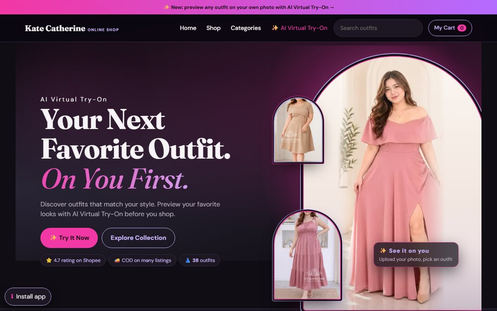
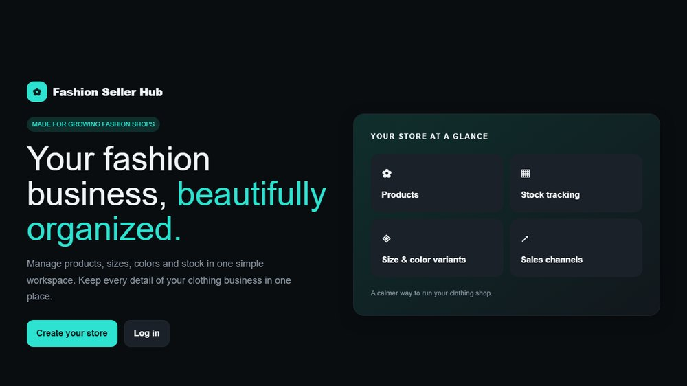

01 / EDIT
Short-form
video editing
Clean cuts, captions, transitions, text overlays and music for concise, social-ready videos.
Independent creative · Philippines
I’m Bernadeth — a short-form video editor and social media content creator. I turn raw clips and product details into clear, engaging content.
I enjoy shaping short videos that feel easy to follow and made for the feed. My approach is practical: keep the message clear, give each moment room to land, and take care with the finishing details.
Alongside editing, I’ve supported social media and online product content — from preparing promotional posts to keeping listings and information organized.
A little more about working together ↗Flexible content support, from the first trim to the final upload-ready file.
Clean cuts, captions, transitions, text overlays and music for concise, social-ready videos.
Promotional posts, product photos and organized content prepared for publishing.
Careful product details, images and listing content that help information stay clear and consistent.
Short-form video samples with a clear point of view: strong opening frames, readable type, and a considered finish.
Video preview unavailable.
Video preview unavailable.
Video preview unavailable.

An online fashion shop with an AI Virtual Try-On, so shoppers can preview outfits on their own photo, plus direct Shopee and Lazada buy links.
Visit website ↗
A simple workspace for fashion shops to manage products, sizes, colors and stock in one place.
Visit website ↗SELECT A CLIP TO PLAY · BEST VIEWED WITH SOUND
EDIT & DESIGN
EVERYDAY WORK
WORK EXPERIENCE
At BBB Motoworkz, I supported Facebook page content, prepared promotional posts and short videos, responded to customer questions, and helped maintain accurate product and inventory information.
CORE COMPETENCIES
TRAINING
CERTIFICATES
Hover to pause · tap a card to open it.